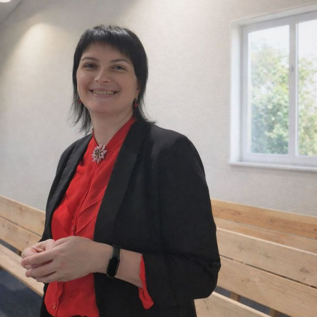

43 роки, Київ. Все життя шиє — дрібний ремонт одягу, постільна білизна, а зараз курс з пошиття одягу для собак. Син виріс, з'явився час подумати про себе, і хочеться зрозуміти, як перетворити цей навик на стабільний дохід.
Не «або-або»: щоб запустити власну справу, потрібен дохід зараз — тож обидва шляхи варто вести одночасно.
Пошиття — не новий навик, а справа всього життя: ремонт одягу, постільна білизна, тепер одяг для собак. Резюме з нуля і чітка самопрезентація дадуть дохід уже зараз, поки розганяється власна справа.
Курс майже пройдено, перші кроки вже зроблені. Тут працює вміння вибудовувати теплі стосунки — тепер із клієнтами.
Шити, спілкуватися з людьми, підтримувати інших.
Шити — все життя: ремонт одягу, постільна білизна, тепер одяг для собак. Емпатійно спілкуватися й підтримувати людей.
Ательє й майстерні, яким потрібні досвідчені швачки; власники тварин, яким потрібні якісні речі для улюбленців.
Робота швачкою чи кравчинею за наймом; handmade одяг для домашніх тварин.
Формат: 4 дзвінки по 45 хв, раз на тиждень, + відповіді в Telegram між дзвінками протягом доби на конкретні питання. Кожен тиждень — своя задача, без розмитого «поговорити ще раз».